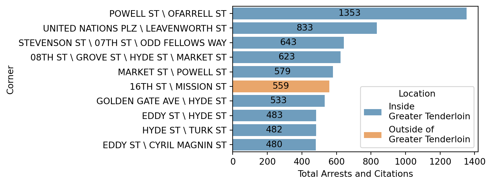
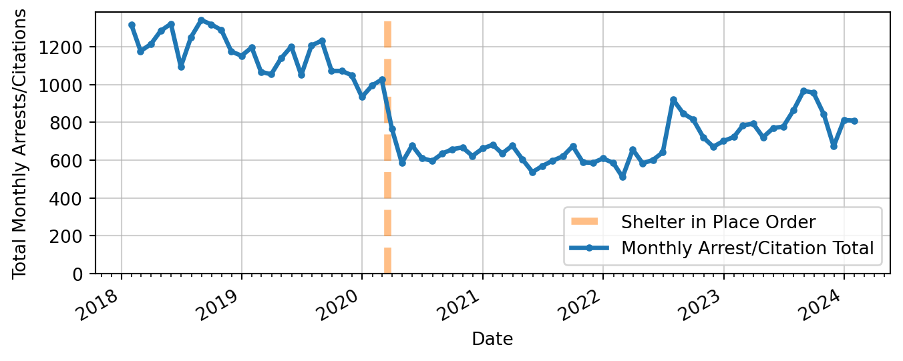
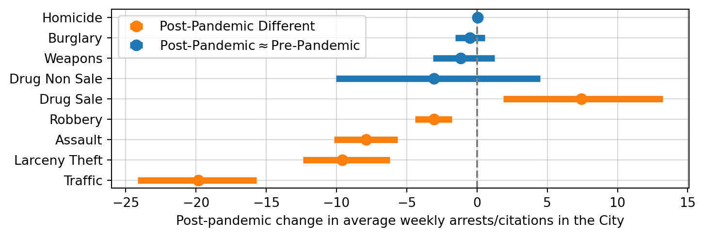
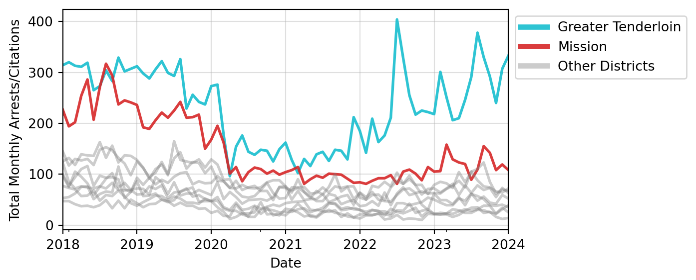
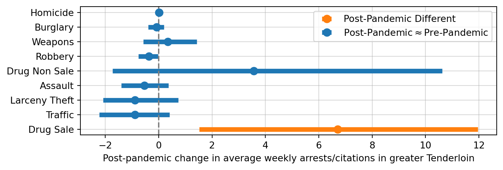
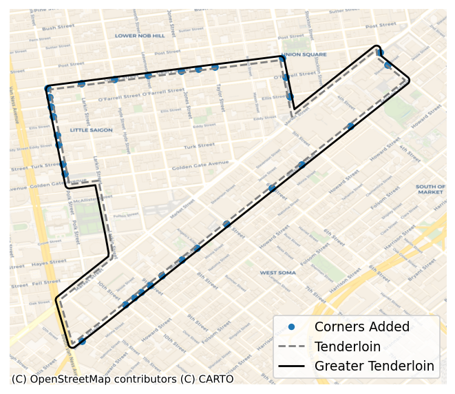

In this memo I analyze trends in arrest and citation activity 1 in San Francisco between 2018 and 2024. Arrest activity decreased during this period, marked by a steady decline before the pandemic, a sharp drop at the outset of the pandemic, and generally low arrest activity in the post-pandemic. In the post-pandemic, arrest levels for almost every class of crime were less than or equal to arrest levels in the pre-pandemic, except for drug sale arrests, which substantially increased. The vast majority of those increased drug sale arrests took place in the Tenderloin. Indeed, the Tenderloin was an exception to the trend of decreasing arrests in San Francisco – arrest activity in the district increased in the post-pandemic, with drug sale arrests driving the increase.
An important caveat of this analysis is that it examines arrests and citations, not crime. Of all crime events, arrests only include those events that are reported to law enforcement and go on to produce an arrest. Trends in arrest do not necessarily point to equal trends in crime, rather they point to trends in how the City and Police Department are prioritizing law enforcement resources, specifically policing. Thus I conclude that in the post-pandemic, the City shifted policing resources towards the Tenderloin and prioritized making arrests for drug sale crime.
Geographic concentration in the Tenderloin
Figure 1 shows that arrests were geographically concentrated in the Tenderloin district over the six-year analysis period. The left-hand panel depicts the general concentration of arrests in downtown police districts – Northern, Central, Southern, the Tenderloin, and the Mission. However, viewing the geographic trends by district obscures more specific patterns illustrated at a block-level in the right panel. Arrest activity along the Northern, Central, and Southern districts’ borders with the Tenderloin accounted for the high arrest numbers in those districts.
At the block level, we can specifically classify “the greater Tenderloin,” the area inside of the Tenderloin plus the corners along its border streets,2 as having particularly high arrest activity. The greater Tenderloin represents 1.01% of the square miles of San Francisco, but made up 27% of the total arrests in the City during the analysis period. Of the top ten street corners in San Francisco ranked by total arrest activity 2018-2024, shown in Figure 2, almost all of them were in the greater Tenderloin.

Changes in post-pandemic arrest patterns
The onset of the pandemic and the accompanying city-wide shelter-in-place order were associated with a large drop in arrests at the city level. Between February and April 2020 – the immediate outset of the pandemic – monthly arrests decreased by 43% (-441 arrests) in San Francisco. This trend aligns with prior study of the pandemic’s effects on crime and policing. In a national analysis that included San Francisco and 11 other major cities, Abrams (2021) found that shelter-in-place orders and the pandemic itself caused substantial and immediate reductions in many types of criminal behavior and their accompanying arrest activity.

While the short-term drop in arrests is intuitive to some degree, it is less intuitive that arrest activity remained depressed for years after the onset of the pandemic. Table 1 defines two distinct, two-year periods:
- the “pre-pandemic,” 1/1/2018-1/1/2020,3 and
- the “post-pandemic,” 1/1/2022-1/1/2024
The table shows that average weekly arrests in the post-pandemic period were still down -36% from the pre-pandemic.
| Time Period | Average Weekly Arrest Total | Difference | Percent |
|---|---|---|---|
| Pre Pandemic (2018-20) | 269 | - | - |
| Post Pandemic (2022-24) | 171 | -98 | -36% |
The general decrease in arrest activity in the post-pandemic was driven by a large decrease in traffic violation arrests, down -19.82 arrests a week on average. Arrests for some violent crimes – robbery and assault – also decreased, as did larceny theft arrests.
In the post-pandemic, homicide, burglary, weapons, and drug-use4 arrests all returned to or else never deviated from pre-pandemic levels. Their average weekly arrest levels in the post-pandemic were not statistically distinguishable from the pre-pandemic.
Sale of drugs was the only incident category where arrest activity significantly increased in the post-pandemic. Arrest tied to the sale of drugs5 increased by 7.43 arrests a week on average. It is notable that drug sale arrests increased while drug-use arrests did not. Figure 4 shows trends for each arrest type, using a statistical approach detailed in the Methods Appendix Section 4.

In the post-pandemic, 73% of all drug sale arrests in the City took place in the greater Tenderloin. The greater Tenderloin is also the only region in the city where arrest activity returned to and in some months exceeded pre-pandemic levels. Other districts generally saw arrest levels drop slightly, or, in the Mission’s case, drop significantly.

The greater Tenderloin also saw a meaningful change in the composition of arrests in the post-pandemic, marked by a growing emphasis on drug sale arrests. Figure 6 shows that for most arrest types in the greater Tenderloin, average weekly arrest levels were essentially equal in the pre and post-pandemic. Drug use arrests rose on their face, but the increase was not statistically significant, suggesting that the weekly arrest totals were highly variable and not consistently elevated.
Drug sale arrests saw a large and statistically significant increase, with 6.7 more arrests a week on average in the post-pandemic. This increase is consistent with media coverage of the City’s aggressive approach to drug crime in the Tenderloin. Neilson (2023) also suggests that policing in the Tenderloin was more aggressive in the post-pandemic, with a particular focus on making arrests for drug sale.

Discussion
I conclude that in the post-pandemic, the City shifted policing resources towards the Tenderloin and prioritized making arrests for drug sale in that district. To be clear, the political and administrative focus on the Tenderloin, and particularly on drug crime in the Tenderloin, is not novel (Hartlaub 2022). However, I newly document the degree to which the City, in the post-pandemic, emphasized arrest activity in the Tenderloin relative to 2018-2020 pre-pandemic trends. The arrest gap between the greater Tenderloin and all other regions in the City grew considerably. This shift in policing resources could have been in response to rising drug sale crime in the Tenderloin, but further research using criminal incident data is necessary to confirm any trends in crime.
Appendix
Data Appendix
I based all analysis on publicly available police incident data from the City of San Francisco (DataSF 2024). Of the 824,565 records in the incident data extract, many are duplicates or else incidents that did not lead to arrest. I applied filtering to isolate the 119,119 records that represent unique arrests between 01-01-2018 and 02-16-2024. I then filtered the dataset to isolate arrests where geographic point data is available – 118,506 unique arrests. The vast majority of the 613 arrests with missing point data were arrests that took place outside of San Francisco. The negligible arrests with missing point data within San Francisco were distributed across districts proportional to their arrest totals, suggesting that dropping missing point data did not bias arrests down in any particular region.
Defining the greater Tenderloin
I define the “greater Tenderloin” by placing a small buffer around the Tenderloin shape to encompass the corners along its immediate edges. See Figure 7 below. The buffered area is added to the Tenderloin and removed from the adjoining districts. The Tenderloin is the only district that I apply this buffering to because no other district has such intense arrest spillover on its borders.

Defining “Drug use” arrests
In the arrest data, there is an arrest type, “Drug,” which contains all drug related offenses. I split this category into two sub-groups – drug sale arrests, and drug use/non sale arrests. All arrests in the broad “Drug” category are also members of one of these two subgroups. I define Drug use, or, non-drug sale arrests, as those drug crimes that do not contain the phrase “sale” in their description.
| Drug Use Arrest Description | Frequency |
|---|---|
| Narcotics Paraphernalia, Possession of | 4,349 |
| Methamphetamine Offense | 1,446 |
| Controlled Substance Offense | 318 |
| Heroin Offense | 298 |
| Opiates Offense | 284 |
| Loitering Where Narcotics are Sold/Used | 249 |
| Cocaine, Base/rock Offense | 231 |
| Marijuana Offense | 227 |
| Firearm, Armed While Possessing Controlled Substance | 207 |
| Cocaine Offense | 161 |
| Controlled Substance, Under the Influence of | 122 |
| Methamphetamine, Transportation | 39 |
| Controlled Substance Violation, Loitering for | 24 |
| Cocaine, Transportation | 21 |
| Hallucinogenics Offense | 20 |
| Marijuana, Transporting | 20 |
| Controlled Substance, Transportation | 12 |
| Methadone Offense | 11 |
| Amphetamines Offense | 11 |
| Opiates, Transportation | 10 |
| Maintain Premise Where Narcotics Are Sold/used | 10 |
| Heroin, Transportation | 9 |
| Opium Offense | 8 |
| Opium Derivative Offense | 6 |
| Marijuana, Cultivating/Planting | 4 |
| Marijuana, Furnishing | 4 |
| Drug Lab Apparatus, Possession | 3 |
| Hypodermic Needle or Syringe, Possession | 2 |
| Narcotics Addict, Failure To Register | 2 |
| Barbiturates, Possession | 2 |
| Prescription, Forge Or Alter (11368 H&S) | 2 |
| Barbiturates Offense | 1 |
| Controlled Substance, Presence Where Used | 1 |
| Barbiturates, Transportation | 1 |
Defining “Drug sale” arrests
Drug sale arrests are those arrests in the “Drugs” category that contain the word “sale” in their description.
| Drug Sale Arrest Description | Frequency |
|---|---|
| Methamphetamine, Possession For Sale | 2,063 |
| Cocaine, Base/rock, Possession For Sale | 1,862 |
| Heroin, Possession For Sale | 1,429 |
| Opiates, Possession For Sale | 898 |
| Controlled Substance, Possession For Sale | 880 |
| Cocaine, Base/rock, Sale | 523 |
| Cocaine, Possession For Sale | 430 |
| Methamphetamine, Sale | 252 |
| Controlled Substance, Sale | 232 |
| Marijuana, Possession For Sale | 182 |
| Heroin, Sales | 133 |
| Opiates, Sale | 108 |
| Hallucinogenic, Possession For Sale | 62 |
| Hallucinogenic, Sale | 45 |
| Methadone, Possession For Sale | 41 |
| Marijuana, Sales | 29 |
| Cocaine, Sale | 18 |
| Sales of Cocaine Base/Schoolyard Trafficking Act Violation | 11 |
| Opium, Possession For Sale | 7 |
| Amphetamine, Possession For Sale | 5 |
| Opium Derivative, Possession For Sale | 3 |
Methods Appendix
In this memo, I used the following core statistical test for examining changes in arrest activity:
\[ arrests_t = \hat{\beta_0} + \hat{\beta_{1}}post_t + \epsilon_t \tag{1}\]
The estimate of interest is \(\hat{\beta_{1}}\), which represents the average increase in weekly arrests in the post-pandemic, 2022-2024, relative to the pre-pandemic, 2018-2020. \(\hat{\beta_{0}}\) is the average weekly arrest level in the pre-pandemic and \(\hat{\beta_{0}} + \hat{\beta_{1}}\) is the average arrest level in the post-pandemic. I test the hypothesis that the average weekly arrest level in the post-pandemic was different from the average weekly arrest level in the pre-pandemic:
\[ H_0: \beta_{1} = 0, \quad H_1: \beta_{1} \neq 0 \tag{2}\]
I repeat the estimation of Equation 1 and test Equation 2 for each arrest type, a total of 9 times, once at the city-level, and once in the greater Tenderloin. I obtain the standard errors presented in the memo via a block bootstrap procedure, with weeks clustered into four-unit groups to address autocorrelation in the week-level time series.
Repeated hypothesis testing introduces the issue of multiple testing, where every additional test we conduct raises the probability that we made a false discovery of change (James et al. 2021, chap 13). To adjust for multiple testing, I apply a Bonferroni correction to the hypothesis tests. Specifically, for a 95% confidence interval, where one would typically test with a threshold for the probability of a false positive, \(\alpha = .05\),6 the Bonferroni correction instead tests with \(\alpha = .05/m\), where \(m\) is the number of hypotheses being tested (James et al. 2021, chap 13). In this case, \(m=\) 9, implying a threshold \(.05/\) 9 \(=\) 0.0056 and confidence intervals that cover 99.44%.
Robustness checks
One potential issue with the modeling approach is that the Bonferroni correction can be overly conservative when the amount of hypotheses being tested is very large or sample sizes are very small. However, in this setting, where only 9 related hypotheses are being tested and the week-level time series is not especially small at \(n=\) 313, the Bonferroni correction can still be an appropriate adjustment (VanderWeele and Mathur 2019). Regardless, to test if the conservatism of the correction meaningfully changes the results of the policy analysis, I fit models with and without it.
I also conduct robustness checks on the standard error specification. In the memo, I present the block-bootstrap standard errors because they rely on minimal assumptions about the structure of the data. However, I present results from two alternatives – Newey-West standard errors, and ordinary least squares (OLS) standard errors – to test robustness of the findings.
Each of these specifications are theoretically inferior to the block-bootstrap approach, but the use of mis-specified OLS is so common in practice as to merit inclusion. Equation 1, when estimated using ordinary least squares (OLS), produces standard errors valid under the following assumptions:
- The error term is normally distributed with constant variance and mean zero: \(\epsilon \sim \mathcal{N}(0, \sigma^2)\).
- Weekly arrests are continuous and distributed normally: \(arrests \in \mathbb{R}\) and \(arrests \sim \mathcal{N}(\mu, \sigma^2)\)
In the context of weekly arrest totals, which are a time-series that exhibit autocorrelation, the first assumption of constant variance may be problematic. Both Newey-West estimation and the block bootstrap are robust to this issue. Arrest count data, which are typically small, positive integers, don’t conform to the structure set forth in the second assumption. The block bootstrap is the only specification present that is robust to this issue. Thus, the bootstrap should be the best approach under the circumstances.
Results
Table 2 shows that changing testing specifications has no impact on any statistical or policy conclusions made at the City-level in the memo.
Table 3 shows that testing specification does not affect core conclusions about drug sale arrests in the greater Tenderloin. However, specification does affect the conclusion presented in the memo that larceny theft, robbery, traffic and drug use arrests did not change in the greater Tenderloin in the post-pandemic. Much of this is due to the fact that OLS becomes an increasingly tenuous approach in the Tenderloin, where weekly arrest counts are often small and clustered near 0, a clear challenge to OLS modeling assumptions.
- Drug use: using OLS with no Bonferroni correction yields a statistically significant increase in drug use arrests. This is a mis-specified test that does not take into account the structure of the data or possible multiple testing issues. All other tests concluded that there was no statistically significant change. Still, the effect is not trivially small, so I temper my conclusion that this arrest class did not increase and encourage further research into this arrest type in particular.
- Larceny theft: similarly, using OLS with no Bonferroni correction yields a statistically significant estimate, while all other tests conclude there was no change. In this case, the change is also practically negligible (less than one arrest a week). In the memo , I report no change in larceny theft arrests in the greater Tenderloin.
- Robbery: every specification that does not utilize the Bonferroni correction yields a small, statistically significant decrease, and every specification with the correction yields no change. In this case, a next step would be using a less conservative correction for multiple testing (James et al. 2021, chap 13). However, given that the effect size is particularly small, I defer to the core specification and report no change in the memo.
- Traffic: tests present a mixed bag and a practically negligible effect size. In the memo I defer to conclusions of the core bootstrap specification.
| Coefficient | Lower bound | Upper bound | Significant | ||
|---|---|---|---|---|---|
| Outcome | Model | ||||
| Assault | Block Bootstrap (block=4) | -7.876190 | -10.182692 | -5.634615 | True |
| Block Bootstrap, no Bonferroni | -7.876190 | -9.509615 | -6.259615 | True | |
| Newey West (lags=3) | -7.876200 | -11.169000 | -4.584000 | True | |
| Newey West, no Bonferroni | -7.876200 | -10.193000 | -5.560000 | True | |
| OLS | -7.876200 | -10.985000 | -4.768000 | True | |
| OLS, no Bonferroni | -7.876200 | -10.063000 | -5.689000 | True | |
| Burglary | Block Bootstrap (block=4) | -0.523810 | -1.540625 | 0.569471 | False |
| Block Bootstrap, no Bonferroni | -0.523810 | -1.250000 | 0.288462 | False | |
| Newey West (lags=3) | -0.523800 | -1.652000 | 0.604000 | False | |
| Newey West, no Bonferroni | -0.523800 | -1.317000 | 0.270000 | False | |
| OLS | -0.523800 | -1.708000 | 0.661000 | False | |
| OLS, no Bonferroni | -0.523800 | -1.357000 | 0.310000 | False | |
| Drug Non Sale | Block Bootstrap (block=4) | -3.066667 | -10.041827 | 4.506490 | False |
| Block Bootstrap, no Bonferroni | -3.066667 | -8.115625 | 2.307692 | False | |
| Newey West (lags=3) | -3.066700 | -10.623000 | 4.490000 | False | |
| Newey West, no Bonferroni | -3.066700 | -8.383000 | 2.250000 | False | |
| OLS | -3.066700 | -7.997000 | 1.863000 | False | |
| OLS, no Bonferroni | -3.066700 | -6.535000 | 0.402000 | False | |
| Drug Sale | Block Bootstrap (block=4) | 7.428571 | 1.889904 | 13.209615 | True |
| Block Bootstrap, no Bonferroni | 7.428571 | 3.432692 | 11.740385 | True | |
| Newey West (lags=3) | 7.428600 | 2.006000 | 12.851000 | True | |
| Newey West, no Bonferroni | 7.428600 | 3.614000 | 11.243000 | True | |
| OLS | 7.428600 | 2.813000 | 12.044000 | True | |
| OLS, no Bonferroni | 7.428600 | 4.181000 | 10.676000 | True | |
| Homicide | Block Bootstrap (block=4) | 0.047619 | -0.059856 | 0.153846 | False |
| Block Bootstrap, no Bonferroni | 0.047619 | -0.038462 | 0.115385 | False | |
| Newey West (lags=3) | 0.047600 | -0.058000 | 0.154000 | False | |
| Newey West, no Bonferroni | 0.047600 | -0.027000 | 0.122000 | False | |
| OLS | 0.047600 | -0.053000 | 0.148000 | False | |
| OLS, no Bonferroni | 0.047600 | -0.023000 | 0.118000 | False | |
| Larceny Theft | Block Bootstrap (block=4) | -9.571429 | -12.384615 | -6.211538 | True |
| Block Bootstrap, no Bonferroni | -9.571429 | -11.740385 | -7.384615 | True | |
| Newey West (lags=3) | -9.571400 | -12.820000 | -6.323000 | True | |
| Newey West, no Bonferroni | -9.571400 | -11.857000 | -7.286000 | True | |
| OLS | -9.571400 | -12.127000 | -7.016000 | True | |
| OLS, no Bonferroni | -9.571400 | -11.369000 | -7.773000 | True | |
| Robbery | Block Bootstrap (block=4) | -3.066667 | -4.396394 | -1.788462 | True |
| Block Bootstrap, no Bonferroni | -3.066667 | -4.019231 | -2.163462 | True | |
| Newey West (lags=3) | -3.066700 | -4.298000 | -1.835000 | True | |
| Newey West, no Bonferroni | -3.066700 | -3.933000 | -2.200000 | True | |
| OLS | -3.066700 | -4.181000 | -1.953000 | True | |
| OLS, no Bonferroni | -3.066700 | -3.850000 | -2.283000 | True | |
| Traffic | Block Bootstrap (block=4) | -19.819048 | -24.129327 | -15.685817 | True |
| Block Bootstrap, no Bonferroni | -19.819048 | -22.884615 | -16.846154 | True | |
| Newey West (lags=3) | -19.819000 | -23.714000 | -15.924000 | True | |
| Newey West, no Bonferroni | -19.819000 | -22.559000 | -17.079000 | True | |
| OLS | -19.819000 | -22.734000 | -16.905000 | True | |
| OLS, no Bonferroni | -19.819000 | -21.870000 | -17.769000 | True | |
| Weapons | Block Bootstrap (block=4) | -1.171429 | -3.127163 | 1.240385 | False |
| Block Bootstrap, no Bonferroni | -1.171429 | -2.461538 | 0.586538 | False | |
| Newey West (lags=3) | -1.171400 | -3.618000 | 1.276000 | False | |
| Newey West, no Bonferroni | -1.171400 | -2.893000 | 0.550000 | False | |
| OLS | -1.171400 | -3.401000 | 1.058000 | False | |
| OLS, no Bonferroni | -1.171400 | -2.740000 | 0.397000 | False |
| Coefficient | Lower bound | Upper bound | Significant | ||
|---|---|---|---|---|---|
| Outcome | Model | ||||
| Assault | Block Bootstrap (block=4) | -0.533333 | -1.403846 | 0.367548 | False |
| Block Bootstrap, no Bonferroni | -0.533333 | -1.144231 | 0.096154 | False | |
| Newey West (lags=3) | -0.533300 | -1.650000 | 0.583000 | False | |
| Newey West, no Bonferroni | -0.533300 | -1.319000 | 0.252000 | False | |
| OLS | -0.533300 | -1.626000 | 0.560000 | False | |
| OLS, no Bonferroni | -0.533300 | -1.302000 | 0.236000 | False | |
| Burglary | Block Bootstrap (block=4) | -0.076190 | -0.394231 | 0.201923 | False |
| Block Bootstrap, no Bonferroni | -0.076190 | -0.307692 | 0.115385 | False | |
| Newey West (lags=3) | -0.076200 | -0.397000 | 0.245000 | False | |
| Newey West, no Bonferroni | -0.076200 | -0.302000 | 0.149000 | False | |
| OLS | -0.076200 | -0.377000 | 0.225000 | False | |
| OLS, no Bonferroni | -0.076200 | -0.288000 | 0.136000 | False | |
| Drug Non Sale | Block Bootstrap (block=4) | 3.561905 | -1.723317 | 10.627163 | False |
| Block Bootstrap, no Bonferroni | 3.561905 | -0.326923 | 8.557692 | False | |
| Newey West (lags=3) | 3.561900 | -2.601000 | 9.725000 | False | |
| Newey West, no Bonferroni | 3.561900 | -0.774000 | 7.898000 | False | |
| OLS | 3.561900 | -0.054000 | 7.178000 | False | |
| OLS, no Bonferroni | 3.561900 | 1.018000 | 6.106000 | True | |
| Drug Sale | Block Bootstrap (block=4) | 6.704762 | 1.521154 | 11.954087 | True |
| Block Bootstrap, no Bonferroni | 6.704762 | 3.115385 | 10.442308 | True | |
| Newey West (lags=3) | 6.704800 | 1.774000 | 11.636000 | True | |
| Newey West, no Bonferroni | 6.704800 | 3.236000 | 10.174000 | True | |
| OLS | 6.704800 | 2.671000 | 10.738000 | True | |
| OLS, no Bonferroni | 6.704800 | 3.867000 | 9.542000 | True | |
| Homicide | Block Bootstrap (block=4) | 0.009524 | 0.000000 | 0.048077 | False |
| Block Bootstrap, no Bonferroni | 0.009524 | 0.000000 | 0.028846 | False | |
| Newey West (lags=3) | 0.009500 | -0.017000 | 0.036000 | False | |
| Newey West, no Bonferroni | 0.009500 | -0.009000 | 0.028000 | False | |
| OLS | 0.009500 | -0.017000 | 0.036000 | False | |
| OLS, no Bonferroni | 0.009500 | -0.009000 | 0.028000 | False | |
| Larceny Theft | Block Bootstrap (block=4) | -0.885714 | -2.081250 | 0.732933 | False |
| Block Bootstrap, no Bonferroni | -0.885714 | -1.769231 | 0.240385 | True | |
| Newey West (lags=3) | -0.885700 | -2.504000 | 0.732000 | False | |
| Newey West, no Bonferroni | -0.885700 | -2.024000 | 0.253000 | False | |
| OLS | -0.885700 | -1.993000 | 0.222000 | False | |
| OLS, no Bonferroni | -0.885700 | -1.665000 | -0.106000 | True | |
| Robbery | Block Bootstrap (block=4) | -0.361905 | -0.761779 | -0.019231 | False |
| Block Bootstrap, no Bonferroni | -0.361905 | -0.644231 | -0.125000 | True | |
| Newey West (lags=3) | -0.361900 | -0.750000 | 0.027000 | False | |
| Newey West, no Bonferroni | -0.361900 | -0.635000 | -0.089000 | True | |
| OLS | -0.361900 | -0.748000 | 0.024000 | False | |
| OLS, no Bonferroni | -0.361900 | -0.634000 | -0.090000 | True | |
| Traffic | Block Bootstrap (block=4) | -0.895238 | -2.221154 | 0.403846 | False |
| Block Bootstrap, no Bonferroni | -0.895238 | -1.807692 | -0.057692 | False | |
| Newey West (lags=3) | -0.895200 | -1.959000 | 0.169000 | False | |
| Newey West, no Bonferroni | -0.895200 | -1.644000 | -0.147000 | True | |
| OLS | -0.895200 | -1.716000 | -0.074000 | True | |
| OLS, no Bonferroni | -0.895200 | -1.473000 | -0.318000 | True | |
| Weapons | Block Bootstrap (block=4) | 0.342857 | -0.569471 | 1.434856 | False |
| Block Bootstrap, no Bonferroni | 0.342857 | -0.307933 | 1.115385 | False | |
| Newey West (lags=3) | 0.342900 | -0.622000 | 1.308000 | False | |
| Newey West, no Bonferroni | 0.342900 | -0.336000 | 1.022000 | False | |
| OLS | 0.342900 | -0.548000 | 1.233000 | False | |
| OLS, no Bonferroni | 0.342900 | -0.284000 | 0.969000 | False |
References
Abrams, David S. 2021. “COVID and Crime: An Early Empirical Look.” Journal of Public Economics 194 (February): 104344. https://doi.org/10.1016/j.jpubeco.2020.104344.
DataSF. 2024. “SFPD Incident Report: 2018 to Present.” Dataset Explainers. https://datasf.gitbook.io/datasf-dataset-explainers/sfpd-incident-report-2018-to-present.
Hartlaub, Peter. 2022. “Culture, Protest and an Earthquake-Proof Bank: A Century of Stories from S.F.’s Tenderloin.” The San Francisco Chronicle, February. https://www.sfchronicle.com/projects/2022/san-francisco-tenderloin-history.
James, Gareth, Daniela Witten, Trevor Hastie, and Robert Tibshirani. 2021. An Introduction to Statistical Learning: With Applications in R. 2nd ed. 2021 edition. New York, NY: Springer.
Neilson, Aldo Toledo, Susie. 2023. “S.F. Drug Arrests Are the Highest They’ve Been in a Decade. Here’s Why.” San Francisco Chronicle, September. https://www.sfchronicle.com/sf/article/tenderloin-drug-arrests-18327055.php.
VanderWeele, Tyler J, and Maya B Mathur. 2019. “SOME DESIRABLE PROPERTIES OF THE BONFERRONI CORRECTION: IS THE BONFERRONI CORRECTION REALLY SO BAD?” American Journal of Epidemiology 188 (3): 617–18. https://doi.org/10.1093/aje/kwy250.
Footnotes
For convenience, I will use the term “arrests” to refer to the combination of arrests and citations↩︎
A map defining the “greater Tenderloin” is available in Appendix Section 4.1.1↩︎
The U.S. reported its first COVID-19 case in January 2020↩︎
“Drug-use arrests” are defined in Appendix Section 4.1.2↩︎
“Drug-sale arrests” are defined in Appendix Section 4.1.3↩︎
\(CI = 1 - \alpha = 1 - .05 = .95\) ↩︎